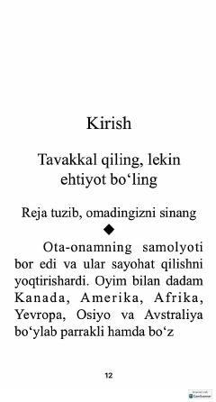

RAHayotiy qiyinchiliklarni yengib o'tishda rejalashtirish va moslashuvchanlikning ahamiyati haqida qo'llanma.
Ushbu kitob hayotiy qiyinchiliklarni yengib o'tishda rejalashtirishning ahamiyati haqida hikoya qiladi. Muallif o'zining shaxsiy tajribalari va ota-onasidan o'rgangan "tavakkal qil, lekin ehtiyot bo'l" shiori asosida qanday qilib maqsad sari intilish va kutilmagan vaziyatlarda moslashuvchan bo'lishni tushuntiradi.